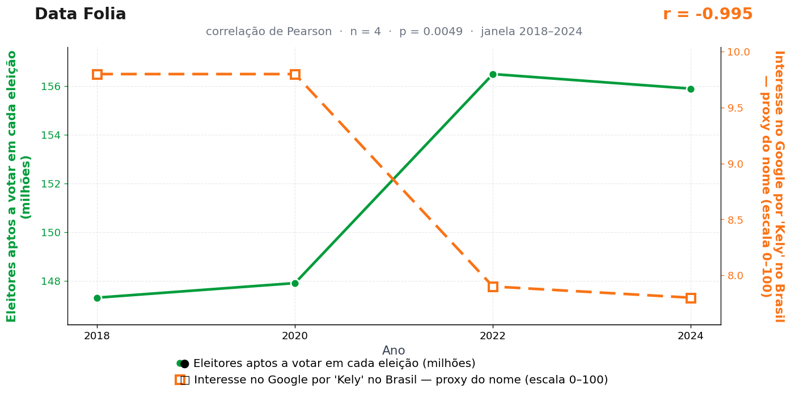

Post de 12/10/2026

A teoria
O eleitorado amplia a escala da burocracia brasileira. Mais gente votando significa mais cadastros, mais conferências e mais necessidade de nomes que atravessem sistemas com velocidade.
Kely, com seu Y final, representa uma elegância fora do padrão do sistema. A letra exige atenção, correção e uma pequena pausa em um processo desenhado para fluxo.
A urna eletrônica, símbolo máximo da eficiência eleitoral, pressiona o imaginário para grafias mais retas. O país vota em massa e, no mesmo gesto, treina o alfabeto para caber no sistema.
O TSE não regula grafias de nomes próprios, e nossa assessoria jurídica agradece diariamente por isso. O Y, procurado, não quis se pronunciar — postura que só reforçou sua fama de letra reservada.
A teoria é ficção; a correlação é real: r = −1,00 (n = 4, p = 0,005).
Os dados por trás

- Eleitores aptos a votar em cada eleição (milhões) — 4 pontos anuais, período 2018–2024. Fonte: TSE — Tribunal Superior Eleitoral.
- Interesse no Google por 'Kely' no Brasil — proxy do nome (escala 0–100) — 4 pontos anuais, período 2018–2024. Fonte: Google Trends (pytrends).
Como as correlações deste site são encontradas — e por que você não deve confiar nelas — está explicado na nossa metodologia.
Por que isso acontece?
Quatro pontos. É esse o tamanho da amostra: só há eleição de dois em dois anos, e a janela 2018–2024 rende n = 4. Com quatro observações, um r de −0,995 impressiona o olho e não sustenta nada: o intervalo de confiança em torno dessa estimativa é vasto o bastante para acomodar desde uma relação fortíssima até nenhuma relação. Qualquer par de séries com um degrau na mesma posição — e as duas têm um degrau entre 2020 e 2022 — produz esse número.
O p = 0,005 sofre do problema de sempre, agravado: além de a amostra ser minúscula, este par foi selecionado entre incontáveis candidatos. P-valores só significam algo quando o teste é único e planejado; aqui ele é o sobrevivente de um funil de coincidências.
E a série de "Kely" no Trends mede um termo de busca raro, com base pequena e renormalização agressiva — o tipo de dado em que um punhado de buscas a mais em Rondônia mexe na escala nacional. Estatística com esse insumo é escultura em gelatina: bonita, desde que ninguém encoste.
Post de 12/10/2026 · publicado também no Instagram @datafolia.